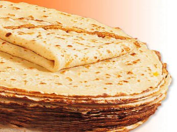

Crêpes
Ingredients
4×
- 250 g de farine
- 1 pincée de sel
- 1 c. à s. de sucre
- 3 œufs
- 50 g de beurre fondu
- 0.5 l de lait

Préparation
Étape 1
Dans un saladier, mettre 250 g de farine, 1 pincée de sel et éventuellement 1 c. à s. de sucre.
Étape 2
Ajouter 3 œufs un à un en mélangeant bien, puis 50 g de beurre fondu. Délayer avec 0.5 l de lait en fouettant.
Étape 3
Laisser reposer 1h.
Étape 4
Cuire les crêpes dans une poêle chaude graissée au beurre.
Conseils
- Pour allonger la pâte : jusqu’à 30% de lait en plus.
- Au Thermomix : Fondre le beurre 2 min/70ºC/vitesse 2, ajouter lait, farine, œufs et sel puis Mixer 20 sec (vitesse non précisée dans la source).